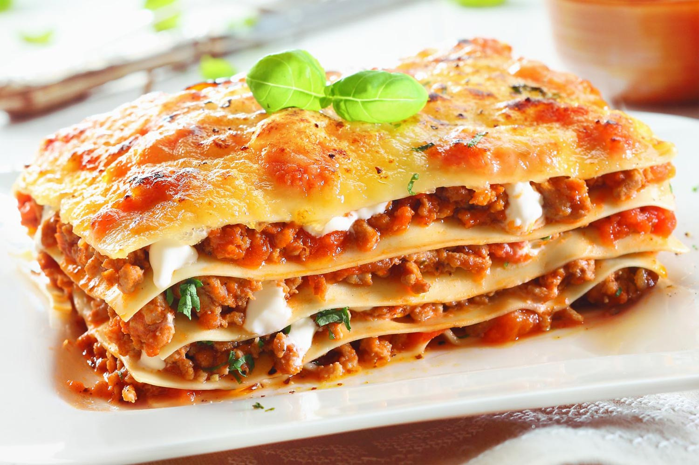

A fuego lento
Cocinar con amor alimenta el alma
Favoritos:
Lasagna
Barbacoa

Carrot Cake

Fajitas

Burritos

Batido Tropical

¿Cómo elegir el mejor asado?
11/02/2020
La clave para saber si es bueno, es que la carne sea "marmolada": la grasa bien blanca y un asado de carne clarita.
 CARLOPEZ: Gracias por estos consejos tan útiles.
CARLOPEZ: Gracias por estos consejos tan útiles.
 MARIELA9: Yo siempre le pregunto a mi carnicero de confianza.
MARIELA9: Yo siempre le pregunto a mi carnicero de confianza.
Nueva Cheesecake
08/02/2020
Esta cheesecake fría, es el nuevo postre que pueden encontrar en la carta del restaurante LA HUELLA. Por favor ¡no dejen de probarla!
 JUAN-89: Yo la probe y me encantó. La recomiendo!
JUAN-89: Yo la probe y me encantó. La recomiendo!
APEREZ: Me recuerda a la que hacía mi abuela.